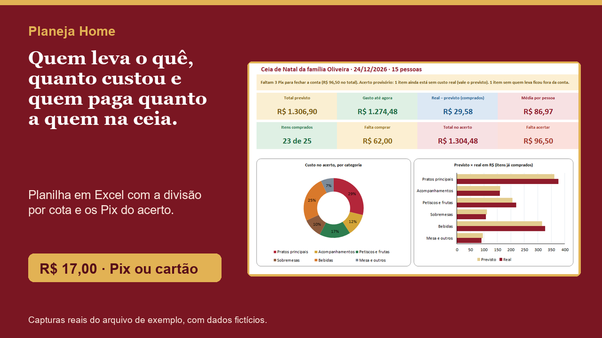
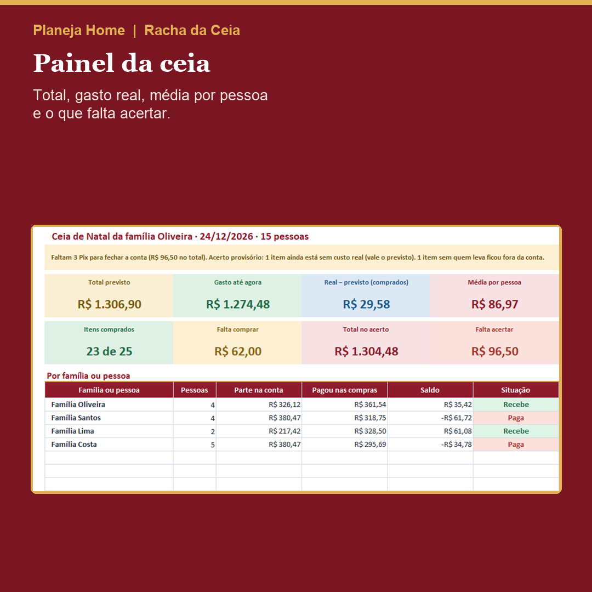
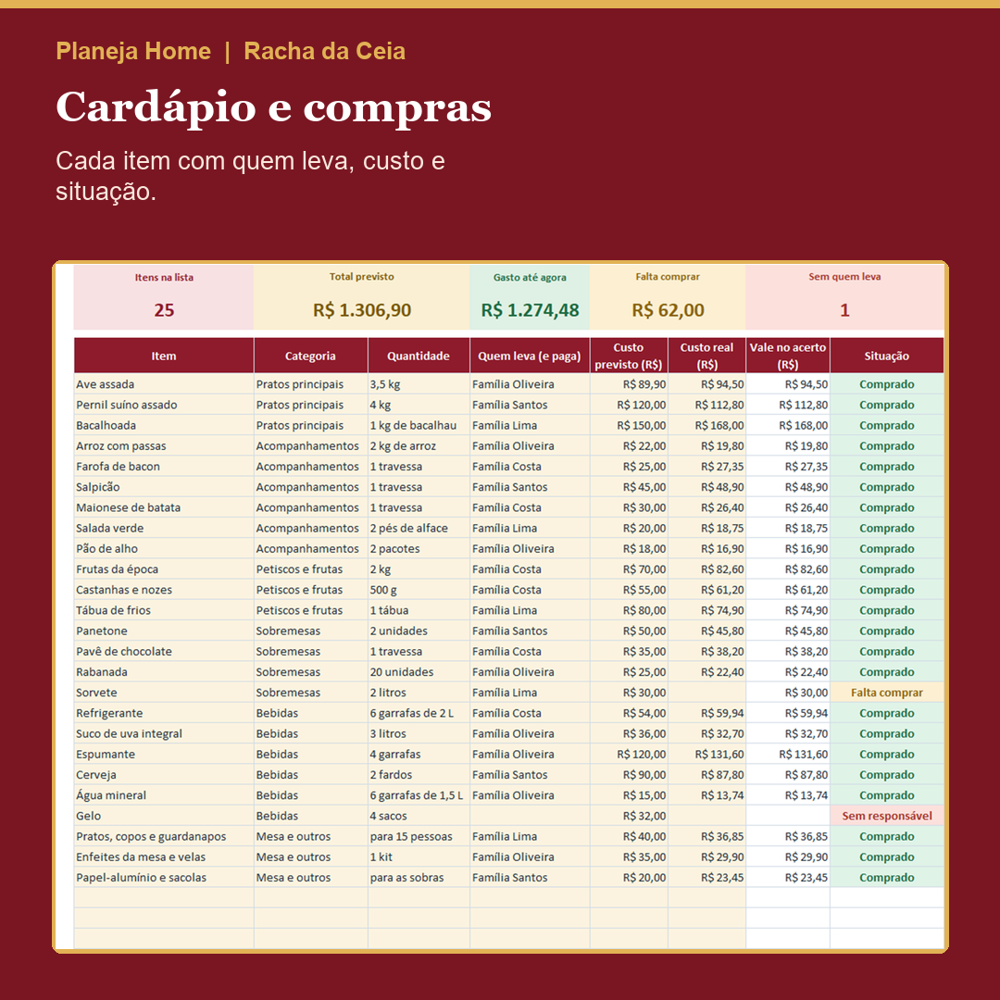
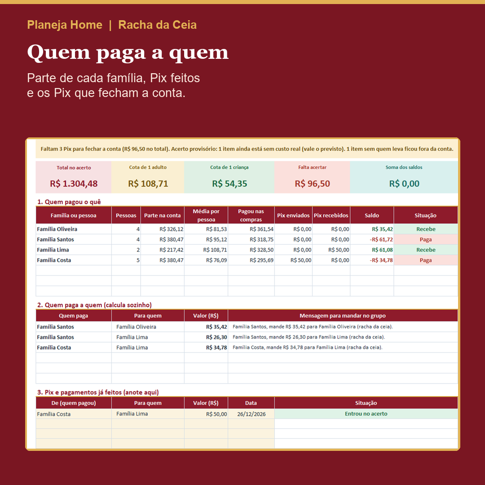
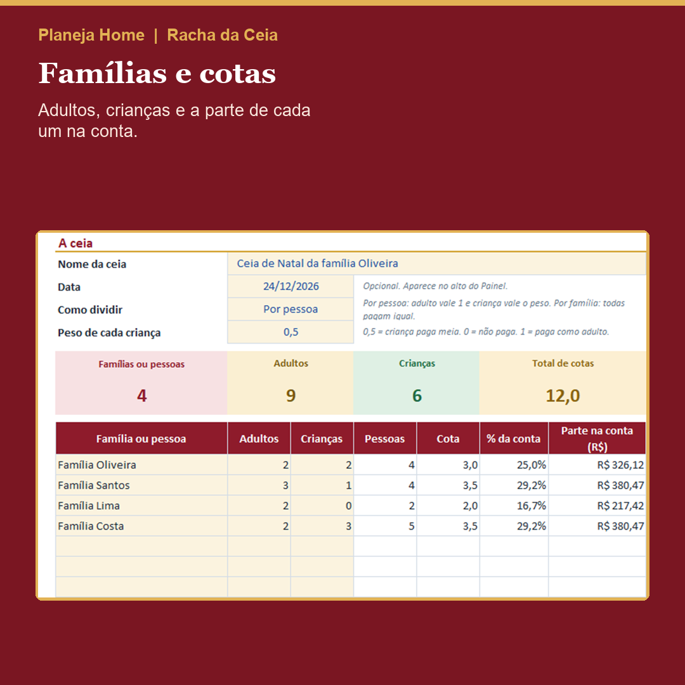

Planeja Home
Veja quem leva o quê, quanto cada item custou e quais Pix fecham a conta da ceia entre as famílias.
O Racha da Ceia é uma planilha em Excel que soma o que cada família pagou nas compras, compara com a parte dela e mostra quem paga quanto a quem, com a mensagem pronta para mandar no grupo.
Quero o Racha da Ceia por R$ 17,00

O problema
Cada família leva um prato, as compras saem de bolsos diferentes e, no fim, ninguém sabe quem deve quanto a quem. Sempre sobra alguém pagando mais, e a conversa no grupo vira discussão de centavos.
O que é
Você lista as famílias com adultos e crianças, escolhe como dividir (por pessoa ou por família) e anota os itens do cardápio com quem leva e o custo. A aba Acerto mostra a parte de cada um, o saldo e a lista de Pix que zera todas as contas. Se alguém já pagou durante o evento, você anota e a planilha recalcula.
O que vem
- Planilha em branco e planilha EXEMPLO, com uma ceia de Natal fictícia (4 famílias, 25 itens).
- Guia em PDF ilustrado, com 19 páginas e prints numerados.
- Participantes: até 12 famílias ou pessoas, com cota de adulto e de criança (peso de 0 a 1 que vocês escolhem).
- Cardápio e compras: até 40 itens, com categoria, quem leva, custo previsto, custo real e situação.
- Acerto: total, cota de cada um, quem pagou o quê, saldo, Pix já feitos e a lista de Pix que fecham a conta.
- Painel com 8 cartões, tabelas por família e por categoria e 2 gráficos.
- Os centavos da divisão são distribuídos, e a soma das partes bate com o total.




Capturas reais do arquivo de exemplo, com dados fictícios.
Para quem é
Anfitriãs e famílias que dividem a ceia de Natal, o Ano-Novo ou outra confraternização e querem a conta clara.
Para quem não é
- Quem procura cronograma da ceia, quantidades por pessoa ou sorteio de amigo secreto: a planilha cuida só do dinheiro e da divisão.
- Quem quer que a planilha defina as regras do grupo: quanto paga criança e quem leva o quê é decisão de vocês; ela só faz a conta.
- Quem quer enviar Pix pelo arquivo: ele mostra os valores, e o pagamento é feito no seu banco.
Como acessar
Depois da compra, baixe os 3 arquivos (planilha em branco, planilha de exemplo e guia em PDF) pelo e-mail ou pela área de membros da Kiwify. Abra a planilha em branco no Excel e digite só nas células creme; as brancas fazem a conta sozinhas. Foi feita e testada no Excel, sem macro. No Google Planilhas ela também abre, mas a proteção das células e os gráficos podem vir diferentes.
Quanto custa
R$ 17,00
Pagamento único. Pix ou cartão (parcelas com juros do cartão, mostradas no checkout).
Garantia de 7 dias
Se não for o que você esperava ou o arquivo não abrir, peça o reembolso em até 7 dias pela Kiwify. Sem perguntas.
Perguntas frequentes
O que é, exatamente?
Uma planilha em Excel para dividir a ceia entre as famílias: quem leva o quê, quanto cada item custou, a parte de cada família na conta e quais Pix fecham o acerto.
O que vem no pacote?
A planilha em branco, o EXEMPLO (uma ceia de Natal fictícia, com 4 famílias e 25 itens) e o guia em PDF ilustrado, de 19 páginas.
Como a conta é dividida?
Você escolhe: por pessoa (cada adulto vale 1 cota e a criança vale o peso que você definir, de 0 a 1) ou por família (todas pagam igual). A planilha soma tudo o que cada família pagou nas compras e compara com a parte dela.
Quem decide quanto paga a criança?
O grupo. Você digita o peso, por exemplo 0,5 para meia cota ou 0 para quem não paga. A planilha só faz a conta.
Como ela diz quem paga a quem?
Na aba Acerto, a lista "Quem paga a quem" mostra poucos Pix, na ordem, que zeram todos os saldos, com a mensagem pronta para mandar no grupo. Os Pix são feitos por você, no seu banco.
E se alguém já pagou um Pix durante a ceia?
Anote na tabela "Pix e pagamentos já feitos" (de quem, para quem e valor). A planilha recalcula e mostra o que ainda falta.
O item ainda não foi comprado. E agora?
Deixe o custo real em branco: vale o custo previsto, e o acerto aparece como provisório. Quando comprar, digite o valor real.
E se eu esquecer de preencher quem leva um item?
A situação aparece como "Sem responsável" e o item fica fora do acerto até você escolher um nome da lista.
Posso usar para o Ano-Novo ou outra confraternização?
Sim, é só mudar o nome e a data da ceia. Cabem até 12 famílias ou pessoas e 40 itens.
Funciona no Google Planilhas e no celular?
Foi feita e testada no Excel, sem macro. No Google Planilhas ela abre, mas a proteção das células e os gráficos podem vir diferentes. No celular, use o app do Excel; para montar a lista, o computador é mais confortável.
Qual a diferença para o Kit Natal e Ceia?
O Kit Natal e Ceia cuida de quantidades, cronograma e amigo secreto. O Racha da Ceia cuida só do dinheiro: a divisão, o acerto e os Pix. Não tem cronograma nem sorteio.
Como funciona a garantia?
7 dias a partir da compra. Peça o reembolso pela Kiwify ou responda o e-mail da compra; devolvemos sem perguntas.